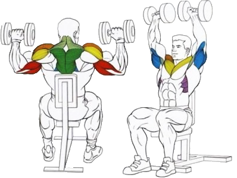

Eще один вариант упражнений для развития силы и массы дельтовидных мышц.
Исходное положение:
Сидя на скамье со спинкой, не прогибая спину.
Подбородок параллелен полу, взгляд прямо перед собой.
Гантели находятся на уровне глаз.
Локти развернуты в стороны и находятся строго под кистями.
Техника выполнения:
На выдохе мощно выжать гантели вверх, сводя их в верхней точке, без разворота кистей.
В верхней точке сделать небольшую паузу.
На вдохе плавно вернуть руки в исходное положение.
Рекомендации:
Руки двигаются в одной плоскости.
Не следует распрямлять руки рывком в верхней точке – это пагубно сказывается на локтевых суставах!
Не рекомендуется наклоняться назад и прогибать спину.